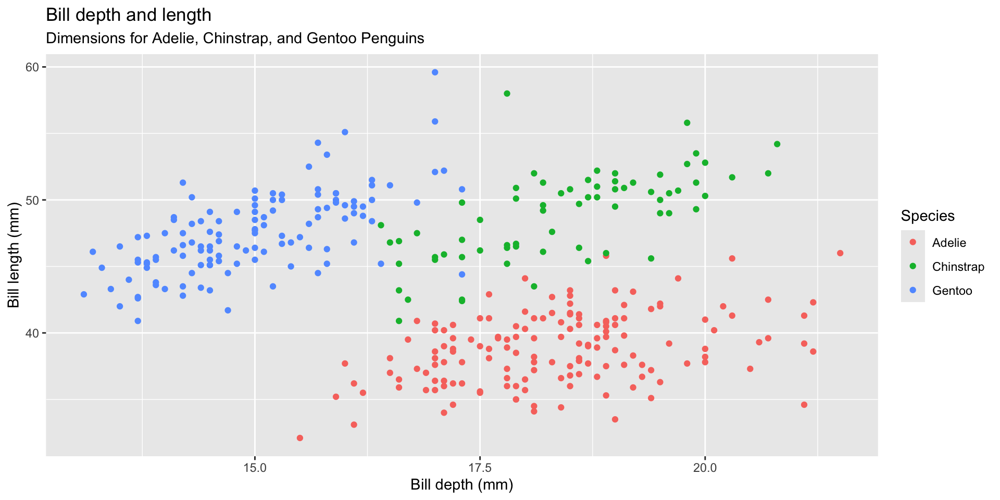
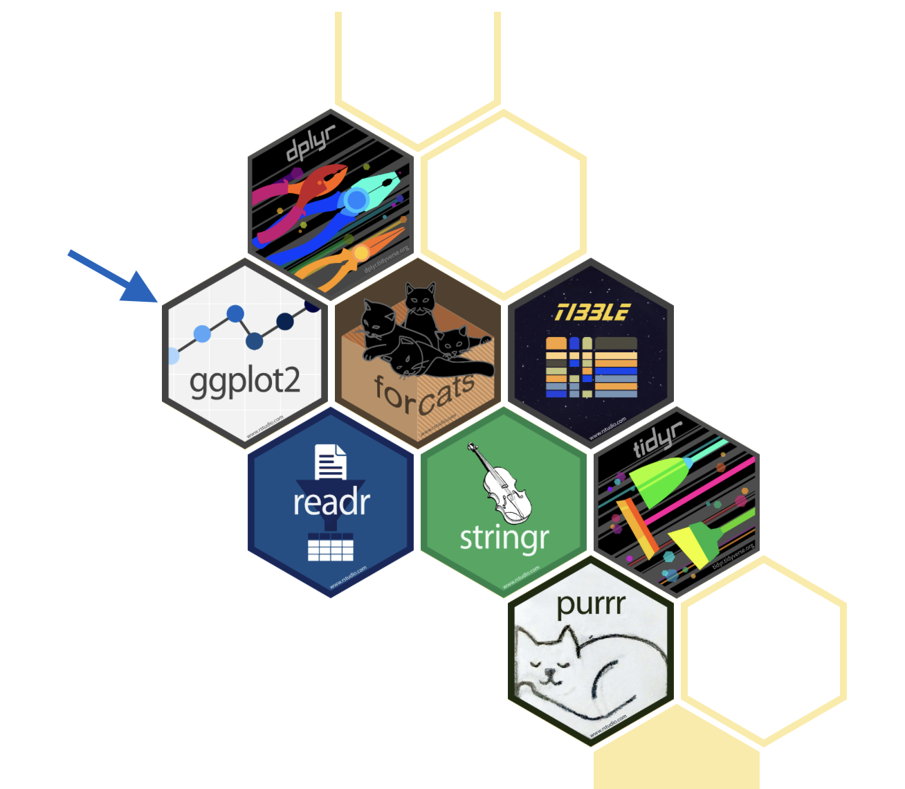
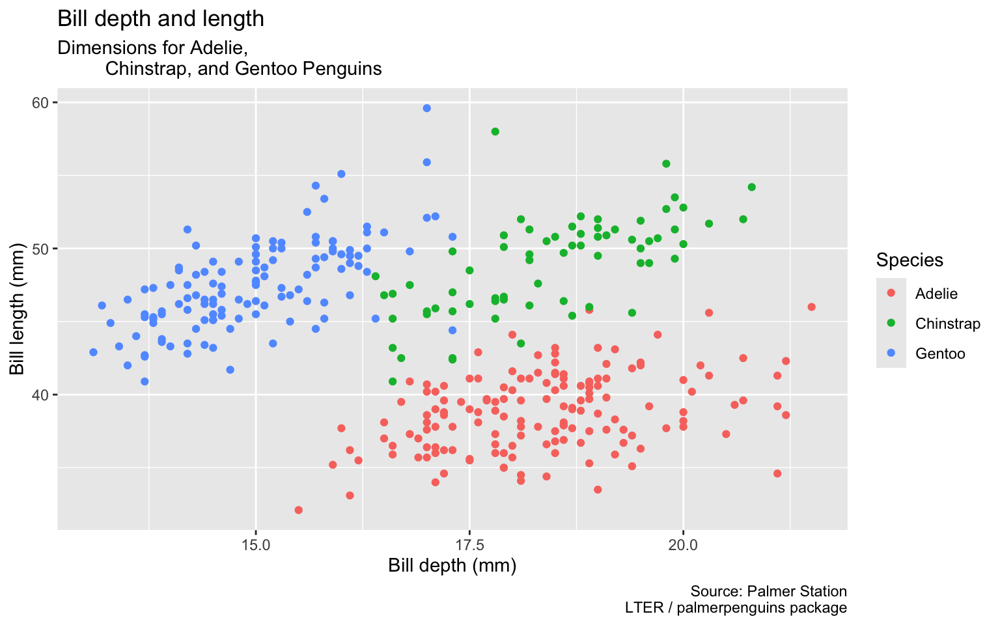
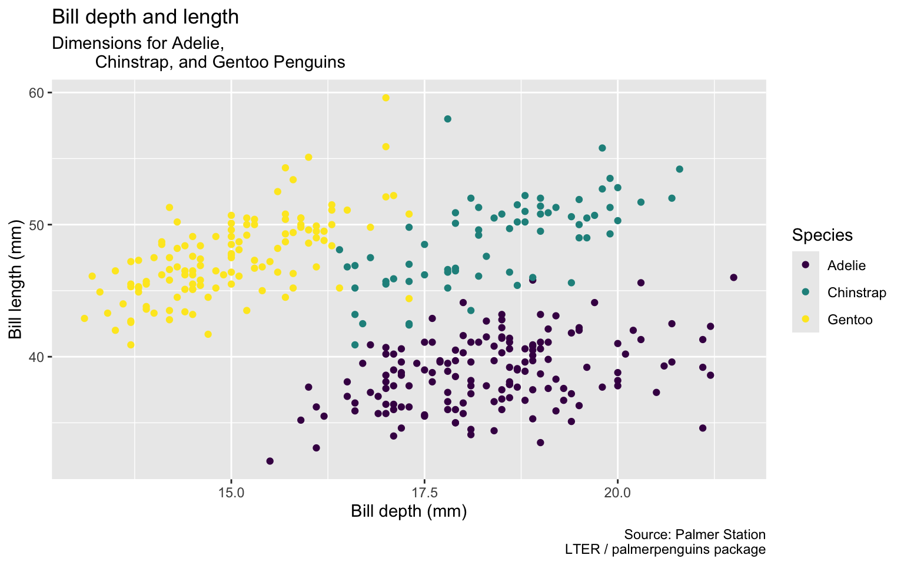
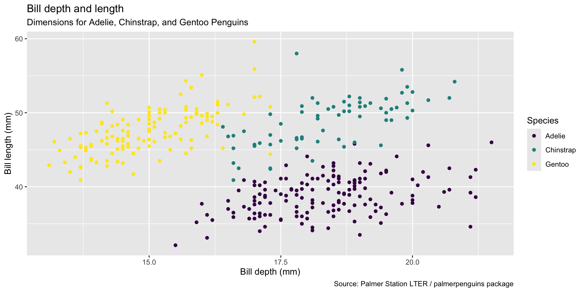
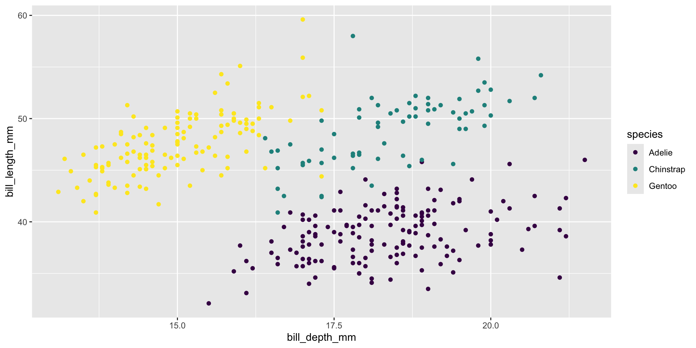
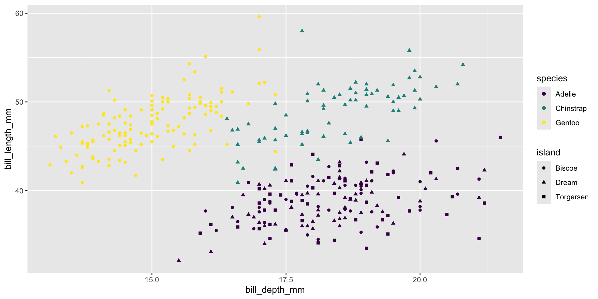
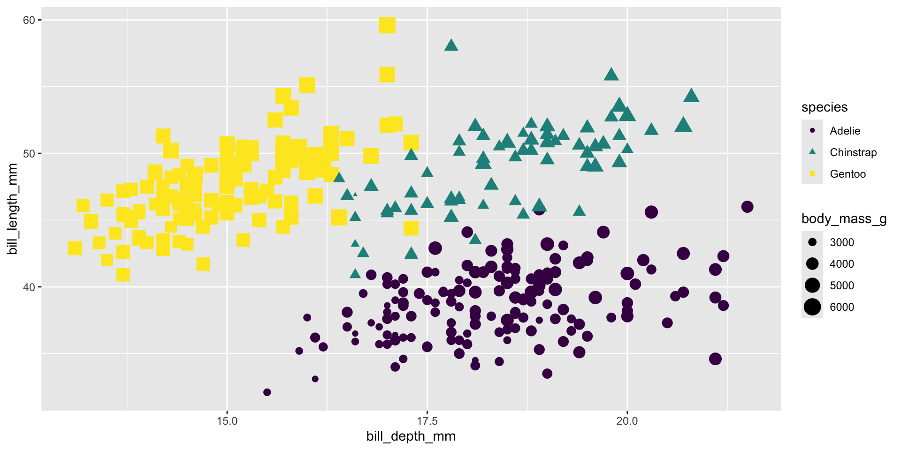
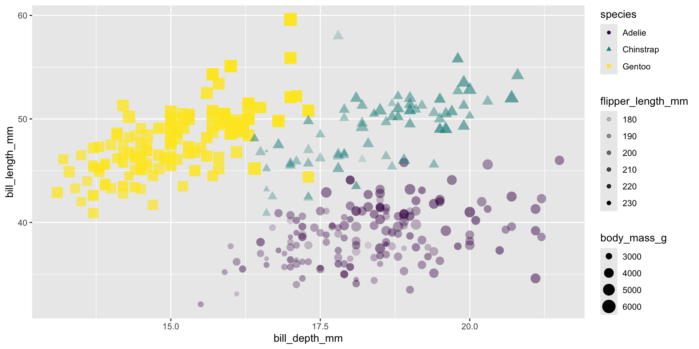

Introduction to ggplot2
Lucy D’Agostino McGowan
ggplot2 \(\in\) tidyverse
ggplot(data = [dataset],
mapping = aes(x = [x-variable],
y = [y-variable])) +
geom_xxx() +
other options
- ggplot2 is tidyverse’s data visualization package
- Structure of the code for plots can be summarized as
Data: Palmer Penguins
Plot in Layers
Start with the penguins data frame
Start with the penguins data frame, map bill depth to the x-axis
Start with the penguins data frame, map bill depth to the x-axis and map bill length to the y-axis.
Start with the penguins data frame, map bill depth to the x-axis and map bill length to the y-axis. Represent each observation with a point
Start with the penguins data frame, map bill depth to the x-axis and map bill length to the y-axis. Represent each observation with a point and map species to the color of each point.
Start with the penguins data frame, map bill depth to the x-axis and map bill length to the y-axis. Represent each observation with a point and map species to the color of each point. Title the plot “Bill depth and length”
Start with the penguins data frame, map bill depth to the x-axis and map bill length to the y-axis. Represent each observation with a point and map species to the color of each point. Title the plot “Bill depth and length”, add the subtitle “Dimensions for Adelie, Chinstrap, and Gentoo Penguins”
Start with the penguins data frame, map bill depth to the x-axis and map bill length to the y-axis. Represent each observation with a point and map species to the color of each point. Title the plot “Bill depth and length”, add the subtitle “Dimensions for Adelie, Chinstrap, and Gentoo Penguins”, label the x and y axes as “Bill depth (mm)” and “Bill length (mm)”, respectively
Start with the penguins data frame, map bill depth to the x-axis and map bill length to the y-axis. Represent each observation with a point and map species to the color of each point. Title the plot “Bill depth and length”, add the subtitle “Dimensions for Adelie, Chinstrap, and Gentoo Penguins”, label the x and y axes as “Bill depth (mm)” and “Bill length (mm)”, respectively label the legend “Species”
Start with the penguins data frame, map bill depth to the x-axis and map bill length to the y-axis. Represent each observation with a point and map species to the color of each point. Title the plot “Bill depth and length”, add the subtitle “Dimensions for Adelie, Chinstrap, and Gentoo Penguins”, label the x and y axes as “Bill depth (mm)” and “Bill length (mm)”, respectively label the legend “Species”, and add a caption for the data source.
ggplot(data = penguins,
mapping = aes(x = bill_depth_mm,
y = bill_length_mm,
color = species)) +
geom_point() +
labs(title = "Bill depth and length",
subtitle = "Dimensions for Adelie,
Chinstrap, and Gentoo Penguins",
x = "Bill depth (mm)",
y = "Bill length (mm)",
color = "Species",
caption = "Source: Palmer Station
LTER / palmerpenguins package")
Start with the penguins data frame, map bill depth to the x-axis and map bill length to the y-axis. Represent each observation with a point and map species to the color of each point. Title the plot “Bill depth and length”, add the subtitle “Dimensions for Adelie, Chinstrap, and Gentoo Penguins”, label the x and y axes as “Bill depth (mm)” and “Bill length (mm)”, respectively label the legend “Species”, and add a caption for the data source. Finally, use a discrete color scale that is designed to be perceived by viewers with common forms of color blindness.
ggplot(data = penguins,
mapping = aes(x = bill_depth_mm,
y = bill_length_mm,
color = species)) +
geom_point() +
labs(title = "Bill depth and length",
subtitle = "Dimensions for Adelie,
Chinstrap, and Gentoo Penguins",
x = "Bill depth (mm)",
y = "Bill length (mm)",
color = "Species",
caption = "Source: Palmer Station
LTER / palmerpenguins package") +
scale_color_viridis_d()

ggplot(data = penguins,
mapping = aes(x = bill_depth_mm,
y = bill_length_mm,
color = species)) +
geom_point() +
labs(title = "Bill depth and length",
subtitle = "Dimensions for Adelie, Chinstrap, and Gentoo Penguins",
x = "Bill depth (mm)", y = "Bill length (mm)",
color = "Species",
caption = "Source: Palmer Station LTER / palmerpenguins package") +
scale_color_viridis_d()Start with the penguins data frame, map bill depth to the x-axis and map bill length to the y-axis. Represent each observation with a point and map species to the color of each point. Title the plot “Bill depth and length”, add the subtitle “Dimensions for Adelie, Chinstrap, and Gentoo Penguins”, label the x and y axes as “Bill depth (mm)” and “Bill length (mm)”, respectively label the legend “Species”, and add a caption for the data source. Finally, use a discrete color scale that is designed to be perceived by viewers with common forms of color blindness.
Aesthetics
Aesthetics
Commonly used characteristics of plotting characters that can be mapped to a specific variable in the data are
colorshapesizealpha(transparency)
Color
Shape
Size
Alpha
Mapping vs. setting
- Mapping: Determine the size, alpha, etc. of points based on the values of a variable in the data
- goes into
aes() - Setting: Determine the size, alpha, etc. of points not based on the values of a variable in the data
- goes into
geom_*()(this wasgeom_point()in the previous example, but we’ll learn about other geoms soon!)
Application Exercise
Open the Welcome Penguins folder from Day 1 in RStudio Pro (can’t find it? Copy the files again by following these instructions)
Create a new R chunk (don’t remember how to do this? Make sure you are using the visual editor then click Insert > Code Chunk > R). Using the code in the chunk labeled
plotas a template, create a plot that examines the relationship betweenx= Flipper Length andy= Bill Depth.Update the plot from part 2 to have a different shape depending on the Island the penguin is from.
Change the size of all of the points to 3.
Be sure to update all labels to describe what you have created.
BONUS: Is there any missing data? What is the plot doing with the missing values? See if you can get rid of the warning message.
10:00

Slides adapted from datasciencebox.org by Dr. Lucy D’Agostino McGowan